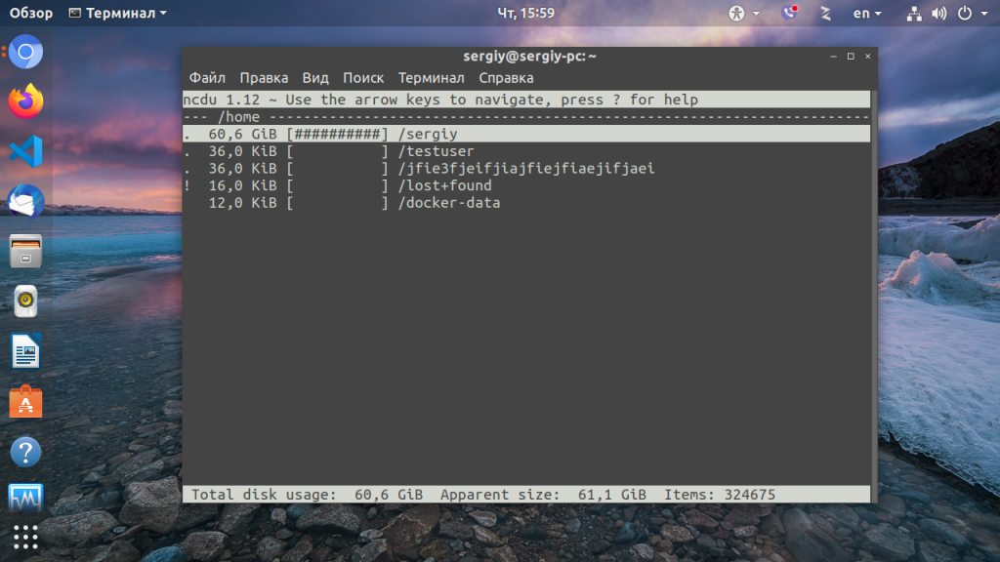
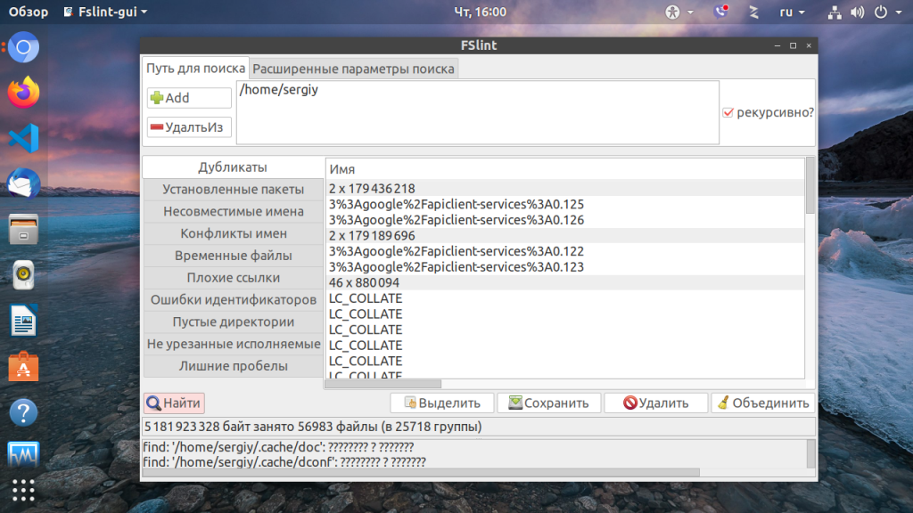
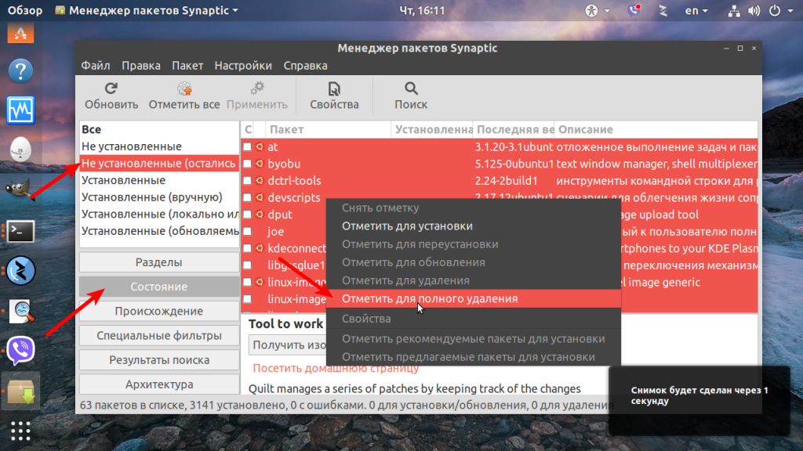
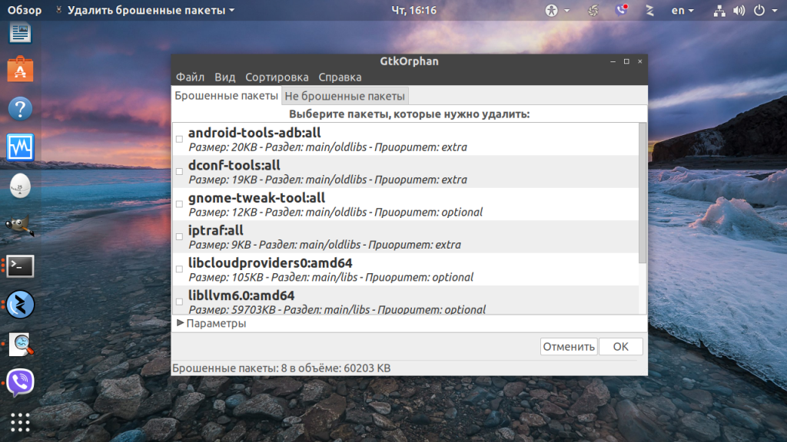
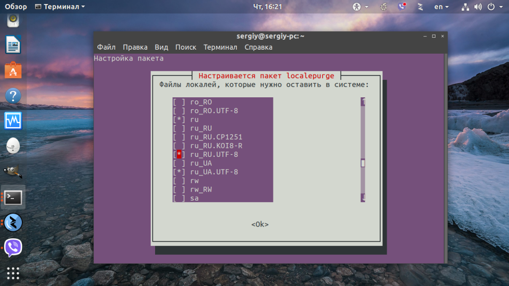
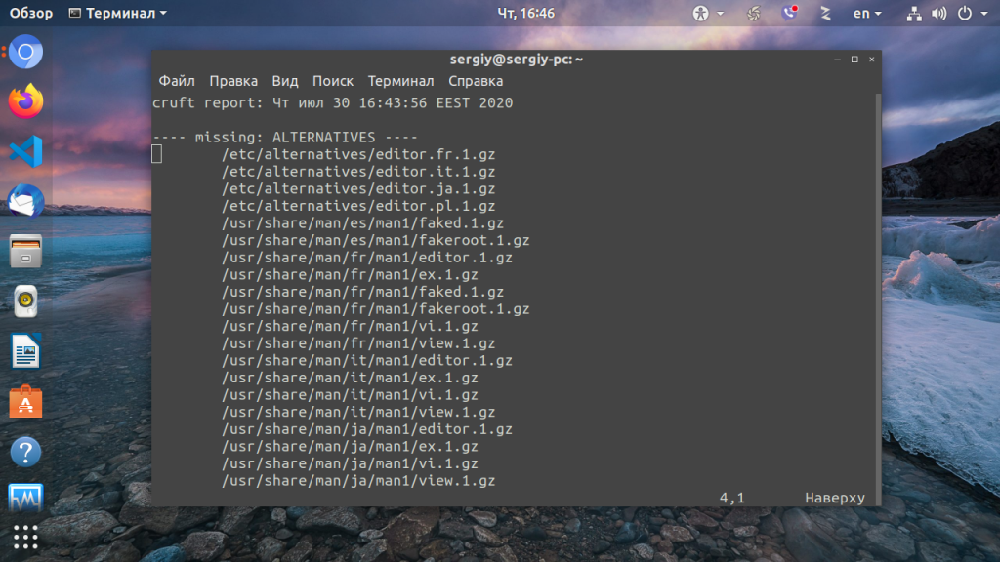
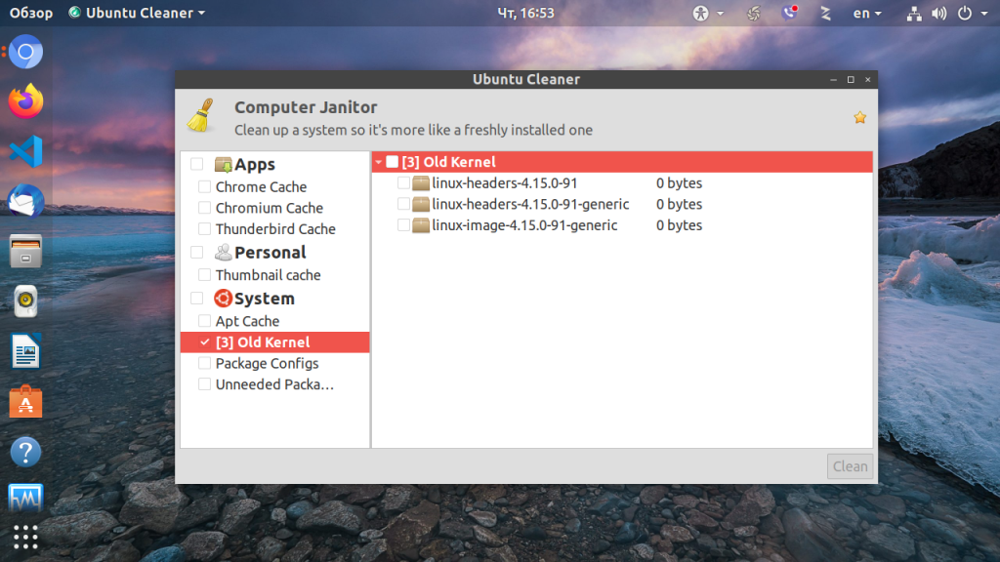

Очистка системы Ubuntu
Инструкции Обновлено: 30 июля, 2020 20 admin
Хочу порекомендовать VPS хостинг от профессионалов с самой лучшей технической поддержкой, на котором работает этот веб-сайт. У них есть VPS и выделеные серверы под любые нужды. Регистрируйтесь и получите скидку 25% на первый платеж для любого SSD VPS при оплате на один, три или шесть месяцев.
Ни для кого не секрет что система в процессе своей работы засоряется. Установка и удаление программ, выполнение скриптов, обновления, неверная установка программ из исходников, ошибки в программах, все это оставляет в системе лишние, ненужные пакеты. Со временем этих файлов может накапливаться достаточно большое количество.
Конечно, Ubuntu, как и любая другая операционная система Linux засоряется намного меньше Windows, здесь нет реестра, и архитектура системы рассчитана так, чтобы оставлять мусор по минимуму. Но кроме системных недочетов, в файловой системе могут накапливаться ненужные файлы пользователей и программ. Поэтому очистка ubuntu от мусора необходима.
В этой инструкции будет рассмотрена очистка системы Ubuntu. Мы рассмотрим как очистить ненужные, не используемые пакеты, удалить пользовательские файлы и уже ненужные файлы настроек, которые остались в системе, а также найдем все файлы, не принадлежащие ни одному пакету, чтобы вы могли сами оценить нужны они вам или нет. Будет рассмотрена очистка кэша в ubuntu и удаление старых ядер.
1. Использование дискового пространства
Очистка системы Ubuntu 20.04 должна начаться с выяснения, какие файлы потребляют больше всего пространства на диске. В этом вам поможет программа ncdu. Это консольная утилита с псевдографическим интерфейсом, но мне она нравится больше всего. Сначала её надо установить. Для этого выполните в терминале:
sudo apt install ncdu
Затем запустите программу:
ncdu /

После завершения анализа вы можете увидеть какие файлы занимают больше всего пространства на жестком диске. Вы внезапно можете обнаружить, что много места занимают логи или ненужные файлы в домашней папке. Вы можете открывать папки клавишей Enter, перемещаться по ним с помощью стрелок вверх и вниз, а также прямо здесь удалять ненужные файлы с помощью кнопки Delete. Более подробно про утилиты для анализа занимаемого пространства читайте в отдельной статье.
Со временем могло накопиться несколько копий одного файла в системе. Если нужна очистка памяти в Ubuntu, то такие файлы важно найти и удалить, прежде чем они заполнят весь жесткий диск.
Для решения этой задачи есть несколько утилит. Утилита FSlint позволяет найти и очистить битые символические ссылки, а также дубликаты файлов в файловой системе.
Для установки программы используйте команду:
sudo apt install fslint
Запустить программу можно из главного меню. В главном окне нужно указать путь, по которому следует искать дубликаты файлов с помощью кнопки Add, затем перейти на вкладку Дубликаты и нажать в самом низу Найти:

Когда поиск будет завершен, утилита выведет все одинаковые файлы группами, и вы сможете прямо здесь отметить те файлы, которые надо удалить или заменить на символическую ссылку с помощью контекстного меню.
Еще одним отличным решением для поиска дублей есть утилита BleachBit, кроме поиска дубликатов файлов, здесь есть специальные приложения для нахождения дублей фото и аудиофайлов по специальным алгоритмам. Подробнее о работе с программой я писал в отдельной статье - как освободить место в Linux.
Пакеты программного обеспечения одно из самых слабых мест для засорения системы. Если вы устанавливали много приложений, скорее всего, они потянули за собой большое количество зависимостей, которые после удаления этих приложений не представляют никакой пользы. Поэтому очистка Ubuntu обязательно должна включать удаление ненужных пакетов. Вот несколько команд выполняющих очистку системы:
Удалить неиспользуемые пакеты из кэша
sudo apt autoclean
Очистка кэша в Ubuntu, утилиты apt:
sudo apt clean
Удаление ненужных зависимостей:
sudo apt autoremove
Вообще хорошей практикой будет удалять зависимости сразу при удалении приложения:
sudo apt autoremove приложение
В новых версиях Ubuntu используется пакетный менеджер snap, он тоже оставляет в системе кэш, а также старые версии пакетов после обновления. Эти версии уже не используются но всё ещё занимают место. По умолчанию, это три, это значение можно изменить на две с помощью такой команды:
sudo snap set system refresh.retain=2
Если вы хотите полностью удалить неиспользуемые версии пакетов, для этого понадобится использовать небольшой скрипт:
sudo vi /usr/local/bin/remove_old_snaps.sh
#!/bin/bash
set -eu
LANG=en_US.UTF-8 snap list --all | awk '/disabled/{print $1, $3}' |
while read snapname revision; do
snap remove "$snapname" --revision="$revision"
done
Если система установлена достаточно давно, и обновлений было много, то такой скрипт может освободить вам несколько гигабайт места. После сохранения файла дайте ему права на выполнение:
sudo chmod ugo+x /usr/local/bin/remove_old_snaps.sh
Затем выполните:
sudo ./remove-old-snaps.sh
При обновлении пакета до более новой версии, его старая версия и её конфигурационные файлы тоже остаются в системе и занимают место на диске. Вы можете освободить немного пространства, удалив такие пакеты.
Откройте менеджер пакетов Synaptec, нажмите кнопку Состояние, затем откройте пункт Не установленные (остались файлы конфигурации). Здесь и будут те пакеты, которые, остались в системе после обновления или неполного удаления.

Поставьте галочки напротив всех таких пакетов, и выберите опцию Отметить для полного удаления. Затем нажмите Правка -> Применить для применения действия.
Аналогичное действие можно выполнить в терминале. Для этого используйте команду:
dpkg -l | awk '/^rc/ {print $2}' | xargs sudo dpkg --purge
Можно воспользоваться и командой попроще если у вас установлен aptitude:
sudo aptitude purge ~c
Мы часто устанавливаем различные пакеты, и не все из них нам нужны долгое время. Бывает, что пакет нужен определенному приложению, но после удаления приложения он больше не используется. Или вы установили программу, попользовались ею пару раз, а потом забыли о ее существовании. Такие приложения тоже нужно найти и ликвидировать чтобы очистка ubuntu от мусора была выполнена полностью.
Для этого будет очень полезной программа GTKOrphan. Для ее установки выполните:
sudo apt install gtkorphan
Как обычно, открыть программу вы можете из главного меню.

Она проанализирует систему и покажет все пакеты, которые не находятся ни у кого в зависимостях. То есть те, которые вы устанавливали сами. Теперь вы можете посмотреть какие из них вам не нужны и спокойно их удалить. Не удаляйте все пакеты бездумно, это может сломать вашу систему. Чтобы отобразить больше пакетов кликните по пункту Параметры и выберите Показывать пакеты не только из библиотеки.
Если вам не нужно переключаться между различными локализациями системы, вы можете просто удалить лишние, не используемые языковые стандарты и освободить немного пространства на диске.
Установите утилиту localepurege:
sudo apt install localepurge
На этапе установки пакета выберите те локали, которые вам нужны, все остальные будут удалены. По умолчанию выбраны en_US и ru_RU для кодировки UTF-8, вы можете выбрать и другие.

8. Никому не принадлежащие файлы
При неправильной установке программ из исходников в системе могут накопляться файлы, не принадлежащие ни одному пакету, после удаления этих программ они могут просто оставаться в системе. Также такие файлы накапливаются при установке программ из бинарных файлов или создаются вами вручную. Одним словом, такие файлы нужно удалять. Для этого будем использовать программу cruft. Для установки выполните:
sudo apt install cruft
Для запуска программы просто выполните её с опцией -r и путём к файлу, куда надо сохранить отчёт:
sudo cruft -r cruftreport
Затем просто откройте полученный файл в с помощью less или cat:
less cruftreport

Программа выдаст список всех никому не принадлежащих файлов. Теперь вы можете просмотреть и удалить те, которые считаете ненужными. Только будьте очень аккуратны, чтобы не удалить ничего лишнего. Не забудьте что такие файлы могут создаваться и обычными программами, например, Grub и SSL.
После обновления ядра, особенно в старых версиях Ubuntu старые ядра всё ещё остаются и занимают место в папке /boot. Чтобы из удалить можно использовать утилиту Ubuntu Cleaner. Для её установки выполните:
sudo apt install ubuntu-cleaner
Откройте программу из главного меню или через терминал, затем отметьте пункт Old Kernel. В правой части окна появится список пакетов ядер, которые можно удалить:

Отметьте нужные и нажмите кнопку Clean. Другие способы удалить старые ядра описаны в отдельной статье.
В этой статье мы рассмотрели несколько самых распространенных способов того, как выполняется очистка Ubuntu от хлама. Они помогут вам поддерживать систему в чистоте. Если вы знаете другие методы, напишите в комментариях!